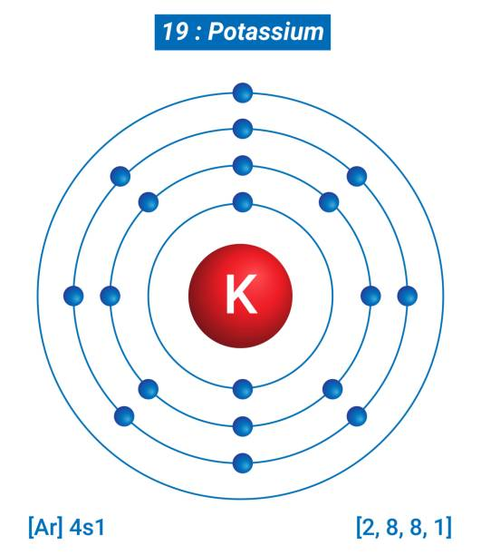

Potassium is found naturally in many foods and as a supplement. Its main role in the body is to help maintain normal levels of fluid inside our cells. Sodium, its counterpart, maintains normal fluid levels outside of cells. Potassium also helps muscles to contract and supports normal blood pressure.
| Property | Value |
|---|---|
| Symbol | K |
| Atomic Number | 19 |
| Atomic Mass | 39.098 u |
| Melting Point | 63.5 °C |
| Boiling Point | 760 °C |
| Electronegativity | 0.82 |